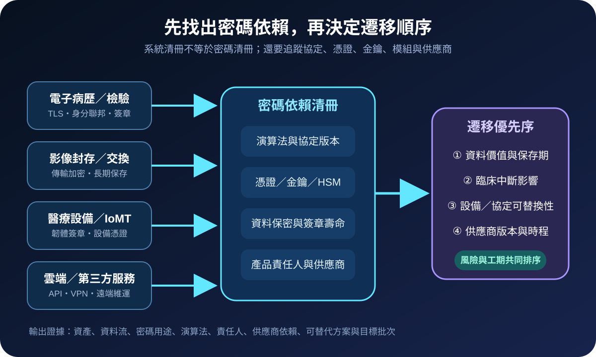
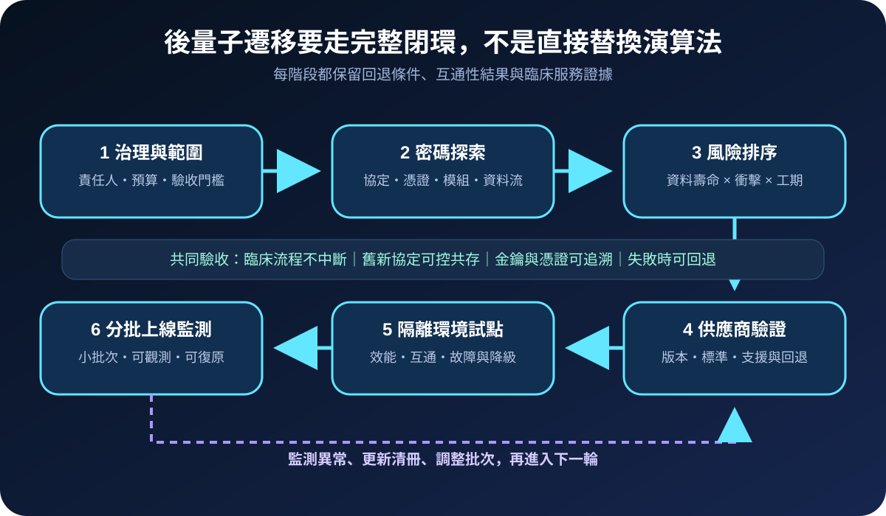
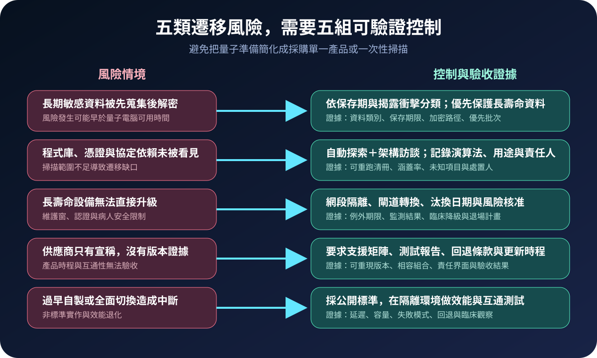

醫療資安國際觀察 · 2026-09-02
醫療系統如何準備後量子遷移：從密碼清冊到供應鏈路線圖
作者：Dr. William｜醫療資訊與資安治理實務工作者
後量子遷移不是等待量子電腦出現後再更換憑證。醫療機構需要先找出長期病歷、影像、設備憑證、VPN、API 與第三方服務中的密碼依賴，才能把有限資源投入最難替換且影響最大的路徑。
名詞解釋：PQC、密碼清冊與密碼敏捷性
後量子密碼（PQC）是用於抵抗量子與傳統電腦攻擊的公開金鑰演算法。密碼清冊記錄系統使用哪些演算法、協定、憑證、金鑰、程式庫與硬體模組，以及它們保護的資料和服務。密碼敏捷性則是能在不中斷主要服務的條件下，更換演算法、金鑰或實作。盤點不是直接部署新演算法，而是建立遷移決策所需的證據。
國際現況與適用邊界
英國 NCSC 於 2025 年提出大型組織的參考里程碑：2028 年前完成目標、全面探索與初步計畫，2031 年前執行高優先項目並形成完整路線圖，2035 年前完成遷移。2026 年 7 月發布的跨產官學工作坊報告進一步強調高階支持、供應鏈準備、優先處理高價值資料與長壽命硬體，以及分階段路線圖。NIST NCCoE 於 2025 年 9 月發布的草案，則把密碼探索與清冊工具、互通性測試及遷移能力對應到 CSF 2.0 與 SP 800-53。
法域與效力：NCSC 里程碑是英國官方指引；NIST 文件屬美國風險管理與技術實作資料，且 CSWP 48 目前為草案。這些日期與控制不是台灣醫院的法定期限。台灣醫療機構可引用其盤點、排序及驗收方法，但實際目標應依本地規範、資料保存需求、設備認證、契約及臨床風險核定。
規劃：以資料壽命與替換工期共同排序
治理範圍可先選一條高影響臨床服務，盤點資料流、TLS、VPN、身分聯邦、程式碼簽章、設備憑證、備份加密與 HSM。角色至少包含資安、網路、系統、臨床工程、採購、法遵、服務負責人及供應商。驗收指標可採密碼依賴涵蓋率、未知項目關閉率、具供應商路線圖的產品比例、試點互通成功率、效能偏差、回退成功率及逾期例外數。

實作：把供應商證據納入技術試點
- 建立基線：結合自動探索、架構文件與系統訪談，記錄演算法、用途、版本、責任人及資料保存期。
- 標出長尾：辨識長期影像、研究資料、封存病歷，以及更新受限的醫療設備與舊式介面。
- 詢問供應商：要求支援標準、產品版本、相容組合、HSM／憑證需求、效能資料、更新時程與回退方式。
- 隔離試點：以公開標準測試新舊協定共存、金鑰生命週期、封包大小、延遲、容量、故障及監測。
- 分批遷移：先處理高資料價值或替換工期長的路徑；每批完成臨床流程、資安事件與災難復原驗證。
風險：過早全面切換與持續等待都會擴大缺口
長期敏感資料可能面臨「先蒐集、後解密」風險；未被看見的程式庫與設備憑證則會形成遷移斷點。另一方面，使用非標準自製密碼、僅接受供應商宣稱，或在未測試效能與互通性前全面切換，也可能造成臨床中斷。暫時無法升級的設備應以隔離、閘道、監測、例外期限及退場日期管理，不能把等待版本視為永久處置。

可執行清單
- 高影響臨床服務是否已有可重跑的密碼依賴清冊？
- 是否依資料保存期、揭露衝擊與替換工期排定批次？
- 長壽命設備是否有支援版本、補償控制與退場日期？
- 新採購是否要求 PQC 路線圖、互通測試及回退證據？
- 試點是否同時驗證延遲、容量、監測、臨床流程與復原？
- 例外是否有責任人、期限、殘餘風險核准與重測條件？
來源
- UK NCSC｜Post-quantum cryptography (PQC) migration workshop report（發布：2026-07-22；查閱：2026-09-02）
- UK NCSC｜Timelines for migration to post-quantum cryptography（發布：2025-03-20；查閱：2026-09-02）
- NIST｜CSWP 48, Mappings of Migration to PQC Project Capabilities（草案發布：2025-09-18；查閱：2026-09-02）
內容說明
本文依健康台灣深耕計畫相關治理內容整理，並參考 NCSC 與 NIST 公開資料，提出台灣醫療機構可採用的後量子遷移盤點與驗收框架；不取代主管機關公告、法律意見、密碼專業評估、設備認證或個案臨床決策。